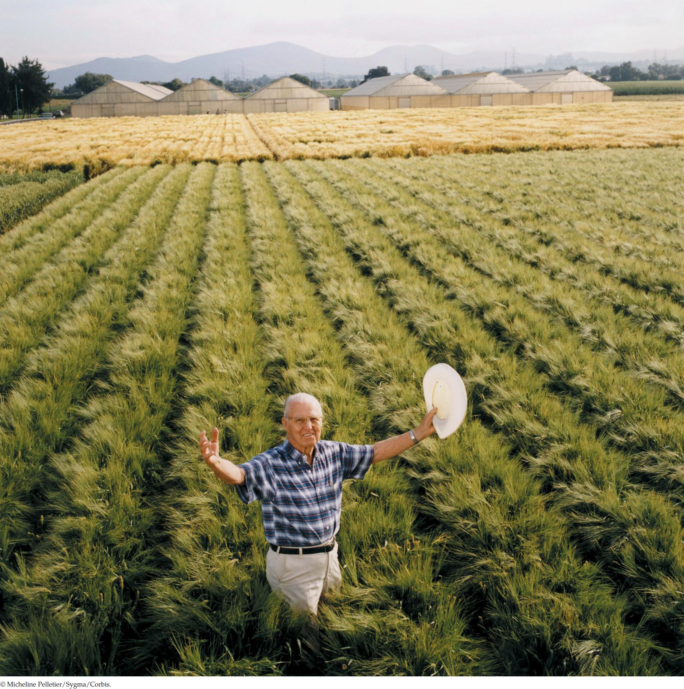

| 26 | Plant Growth and Development |
|

Plant geneticist Norman Borlaug, seen here in a field of semi-dwarf wheat, carried out a program of genetic crosses that led to high-yielding varieties of wheat and saved millions of people from starvation.
|
In their constant search for ways to help farmers produce more food for a growing population, biologists have developed cereal crops whose physiology allows them to produce more grain per plant (a higher yield). When a plant produces a lot of seeds, however, the sheer weight of the seeds may cause the stem to bend over or even break. This makes harvesting the seeds impossible: think of how hard it would be to get enough food for your family if you had to pick up seeds on the ground, some of which had already sprouted.
In 1945 the U.S. Army temporarily occupied Japan, which it had defeated in the Second World War. During the war, Japan, an island nation with a limited amount of land suitable for farming, was blockaded and could not import food. How had Japan been able to grow enough grain to feed its people? The answer lay in the fields: the Japanese had bred genetic strains of rice and wheat with short, strong stems that could bear a high yield of grain without bending or breaking. This innovation made an impression on an agricultural advisor who happened to be among the first wave of U.S. occupiers, and seeds of the Japanese strains were sent back to the United States.
A decade later, Norman Borlaug, a plant geneticist who was working in Mexico at the time, began genetic crosses of what were known as semi-dwarf wheat plants from Japan with wheat varieties that had genes conferring rapid growth, adaptability to varying climates, and resistance to fungal diseases. The results were new genetic strains of wheat that produced record yields, first in Mexico and then in India and Pakistan in the 1960s. At about the same time, and using a similar strategy, scientists in the Philippines developed new semi-dwarf strains of rice with equally spectacular results. People who had lived on the edge of starvation now produced enough food. Countries that had been relying on food aid from other countries were now growing so much grain that they could export the surplus. The development of these new semi-dwarf strains began what was called the “Green Revolution.” Borlaug was awarded the Nobel Peace Prize for his research on wheat, which is estimated to have saved a billion lives.
What changes in their growth patterns made the new strains of cereal crops produced by the Green Revolution so successful?